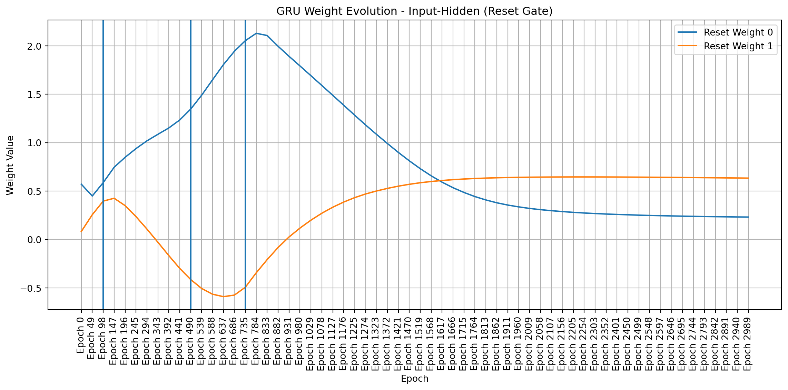
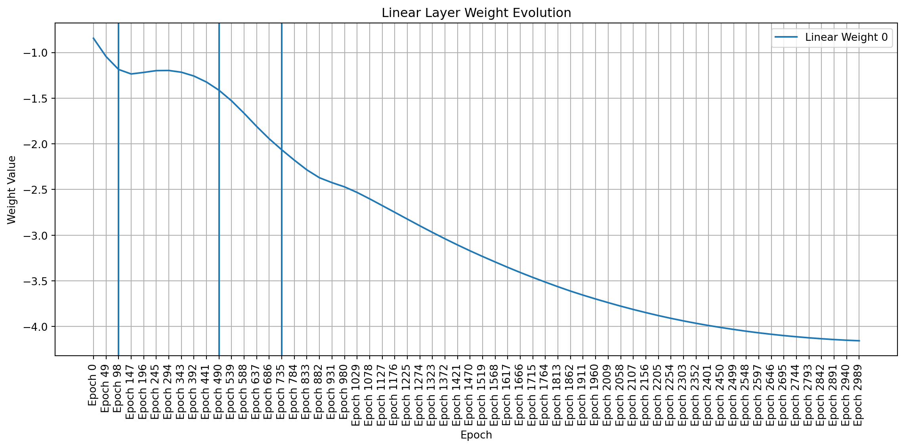

Analyzing GRU Training Dynamics on the Adding Problem - Part 1
programming
web development
research
diary
R&D
Author
Your Name
Published
February 18, 2025
1 Introduction
In this blog post, I want to report on some insights I discovered about the training dynamics of a GRU network applied to a toy problem called the “Adding Problem.” This is a benchmark task for recurrent neural networks. The Adding Problem, introduced by Le, Jaitly, and Hinton, tests a model’s ability to selectively remember and sum relevant information over a sequence. I trained a small GRU model, visualized its training progress, and examined how its weights evolve during training. This low-dimensional weight space allowed me to observe unique insights about the learning process. This work is part of a larger research project where I aim to leverage training dynamics to create a lightweight network. This network will use a combination of meta-learning and Energy-Based Models (EBM) to adjust weights based on input sequences, allowing it to leverage generic pre-training and adapt to different situations.
2 Setup and Data Generation
First, I import the necessary libraries and define the function to generate the Adding Problem dataset. The dataset consists of sequences of synthetic numbers and a binary mask. The model’s task is to sum the numbers indicated by the ’1’s in the mask. The sequence length, mask disposition, and even the number of masked elements are variable. I tried to introduce this variability as an additional source of randomness that will be fundamental in the final network trained for playing a table game.
I defined my GRU model, which consists of a single GRU layer followed by a linear layer. I used orthogonal weight initialization for the GRU and Xavier initialization for the linear layer, following best practices for RNN training. I also defined the evaluation function and the main training loop. Crucially, I added code to store the model’s weights at different epochs. This allows me to analyze their evolution later.
import json# File paths for saved datatrain_losses_path ="train_losses.json"test_losses_path ="test_losses.json"all_weights_path ="all_weights.json"model_save_path = (f"gru_adding_problem_model_epochs_{NUM_EPOCHS}_hidden_{HIDDEN_SIZE}.pth")FORCE_TRAIN =Falsedevice = torch.device("cuda"if torch.cuda.is_available() else"cpu")criterion = nn.MSELoss()def evaluate(model, data_loader, criterion, high): model.eval() total_loss =0with torch.no_grad():for inputs, labels in data_loader: inputs, labels = inputs.to(device), labels.to(device) inputs[:, :, 0] /= high outputs, _ = model(inputs) outputs = outputs * high loss = criterion(outputs, labels) total_loss += loss.item() * inputs.size(0)return total_loss /len(data_loader.dataset)# Try to load data from filesif FORCE_TRAIN ==Falseand os.path.exists(train_losses_path) and os.path.exists(test_losses_path) and os.path.exists(all_weights_path) and os.path.exists(model_save_path):withopen(train_losses_path, "r") as f: train_losses = json.load(f)withopen(test_losses_path, "r") as f: test_losses = json.load(f)withopen(all_weights_path, "r") as f: all_weights_loaded = json.load(f)# Convert loaded weights (which are lists) back to numpy arrays all_weights = []for epoch_weights_list in all_weights_loaded: epoch_weights_dict = {}for name, weights_list in epoch_weights_list.items(): epoch_weights_dict[name] = np.array(weights_list) all_weights.append(epoch_weights_dict)#load model model = AddingProblemGRU( input_size=INPUT_SIZE, hidden_size=HIDDEN_SIZE, output_size=OUTPUT_SIZE) model.load_state_dict(torch.load(model_save_path)) model.to(device)else: model = AddingProblemGRU( input_size=INPUT_SIZE, hidden_size=HIDDEN_SIZE, output_size=OUTPUT_SIZE ) model.to(device) optimizer = torch.optim.Adam( model.parameters(), lr=LEARNING_RATE, weight_decay=WEIGHT_DECAY ) scheduler = torch.optim.lr_scheduler.ReduceLROnPlateau( optimizer, mode="min", factor=0.5, patience=5, min_lr=1e-6, verbose=False ) train_losses = [] test_losses = [] all_weights = []for epoch in trange(NUM_EPOCHS, desc="Epoch"): running_loss =0.0for inputs, labels in train_loader: inputs, labels = inputs.to(device), labels.to(device) inputs[:, :, 0] /= HIGH labels_scaled = labels / HIGH optimizer.zero_grad() outputs, _ = model(inputs) loss = criterion(outputs, labels_scaled) loss.backward() torch.nn.utils.clip_grad_norm_(model.parameters(), CLIP_VALUE) optimizer.step() running_loss += loss.item() * inputs.size(0) epoch_loss = running_loss /len(train_loader.dataset) train_losses.append(epoch_loss)if epoch %49==0: test_loss = evaluate(model, test_loader, criterion, HIGH) test_losses.append(test_loss) scheduler.step(test_loss) weights_dict = {}for name, param in model.named_parameters(): weights_dict[name] = param.data.cpu().numpy().copy() all_weights.append(weights_dict)else: test_losses.append(None)# Save data to fileswithopen(train_losses_path, "w") as f: json.dump(train_losses, f)withopen(test_losses_path, "w") as f: json.dump(test_losses, f)# Convert weights to lists for JSON serialization all_weights_serializable = [ {k: v.tolist() for k, v in epoch_weights.items()}for epoch_weights in all_weights ]withopen(all_weights_path, "w") as f: json.dump(all_weights_serializable, f)# Save Model model_save_path = (f"gru_adding_problem_model_epochs_{NUM_EPOCHS}_hidden_{HIDDEN_SIZE}.pth" ) torch.save(model.state_dict(), model_save_path)
4 Training Metrics Visualization
The following two plots show the training and validation loss curves. These provide a visual indication of how well the model is learning and whether it’s overfitting (which would be indicated by the training loss continuing to decrease while the validation loss starts to increase). In my case, the training loss closely follows the validation loss, suggesting that I likely reached a global minimum.
Code
plt.figure(figsize=(10, 6))plt.plot(train_losses, label="Training Loss")# plt.plot(range(0,NUM_EPOCHS,50), [x for x in test_losses if x is not None], label="Validation Loss") #plot only not none valuesplt.xlabel("Epoch")plt.ylabel("MSE Loss")plt.ylim(0, max(train_losses)*1.05)plt.title("Training and Validation Loss over Epochs")plt.legend()plt.grid(True)plt.show()plt.figure(figsize=(10, 6))# plt.plot(train_losses, label="Training Loss")plt.plot(range(0,NUM_EPOCHS+1,50), [x for x in test_losses if x isnotNone][0:len(range(0,NUM_EPOCHS+1,50))], label="Validation Loss") #plot only not none valuesplt.xlabel("Epoch")plt.ylabel("MSE Loss")plt.title("Training and Validation Loss over Epochs")plt.ylim(0, max([x for x in test_losses if x isnotNone])*1.05)plt.legend()plt.grid(True)plt.show()
Training and Validation Loss
It’s important to note that if the model had overfit the data, then the weight analysis would have been nearly useless.
5 Weight Evolution Analysis
This is the core of my analysis. I examine how the model’s weights change over the course of training. Because my GRU has a small number of parameters, I can visualize this evolution effectively. The PyTorch documentation helps us understand the names of the involved parameters:
weight_ih_l[k] - the learnable input-hidden weights of the \(k^{th}\) layer (\(W_{ir}\)|\(W_{iz}\)|\(W_{in}\)), of shape \((3 * \text{hidden\_size}, \text{input\_size})\) for \(k=0\). In my example, with \(\text{hidden\_size} = 1\) and \(\text{input\_size} = 2\), this is \((3*1, 2)\), or \((3, 2)\).
weight_hh_l[k] - the learnable hidden-hidden weights of the \(k^{th}\) layer (\(W_{hr}\)|\(W_{hz}\)|\(W_{hn}\)), of shape \((3 * \text{hidden\_size}, \text{hidden\_size})\). In my example, with \(\text{hidden\_size} = 1\), this is \((3*1, 1)\), or \((3, 1)\).
bias_ih_l[k] - the learnable input-hidden bias of the \(k^{th}\) layer (\(b_{ir}\)|\(b_{iz}\)|\(b_{in}\)), of shape \((3 * \text{hidden\_size})\). In my example, with \(\text{hidden\_size} = 1\), this is \((3*1)\), or \((3)\).
bias_hh_l[k] - the learnable hidden-hidden bias of the \(k^{th}\) layer (\(b_{hr}\)|\(b_{hz}\)|\(b_{hn}\)), of shape \((3 * \text{hidden\_size})\). In my example, with \(\text{hidden\_size} = 1\), this is \((3*1)\), or \((3)\).
I focused on the key weight matrices:
gru.weight_ih_l0: Input-to-hidden weights. In my example, this has size \((3 \times 2)\).
gru.weight_hh_l0: Hidden-to-hidden weights. In my example, this has size \((3 \times 1)\).
linear.weight: Weights of the final linear layer. In my example, with \(\text{hidden\_size} = 1\) and \(\text{output\_size} = 1\), this has size \((1 \times 1)\). I included this to allow for potentially adding an additional dimension to the hidden layer later.
Now, here’s how GRUs work (it might look a little intimidating at first, but it’s actually quite straightforward):
Initially, for \(t = 0\), the output vector is \(h_0 = 0\).
The \(W_{*}\) weights are the first set of weights (i.e., gru.weight_ih_l0), while the \(U_{*}\) weights are the second set of weights (i.e., gru.weight_hh_l0). The bias terms are straightforward, so I won’t go into detail.
I created plots showing the values of these weights at different stages of training. This visualization helps understand how the GRU learns to solve the adding problem. I used a heatmap to represent the weight matrices, making it easy to spot patterns and changes.
Code
# Select a subset of epochs for clearer visualizationepochs_to_plot = [0, len(all_weights) //4, len(all_weights) //2, len(all_weights) -1]selected_weights = [all_weights[i] for i in epochs_to_plot]# Plotting function for a single weight matrixdef plot_weight_matrix(weight_matrix, title, ax): sns.heatmap(weight_matrix, annot=True, fmt=".2f", cmap="viridis", cbar=True, ax=ax) ax.set_title(title)fig, axes = plt.subplots(len(selected_weights), 3, figsize=(15, 5*len(selected_weights)))for i, epoch_weights inenumerate(selected_weights): plot_weight_matrix(epoch_weights['gru.weight_ih_l0'], f'Epoch {epochs_to_plot[i]*50}: Input-to-Hidden', axes[i, 0]) plot_weight_matrix(epoch_weights['gru.weight_hh_l0'], f'Epoch {epochs_to_plot[i]*50}: Hidden-to-Hidden', axes[i, 1]) plot_weight_matrix(epoch_weights['linear.weight'], f'Epoch {epochs_to_plot[i]*50}: Linear Layer', axes[i, 2])plt.tight_layout()plt.show()
Evolution of GRU + Linear Weights
6 Weight Dynamics and Learned Strategy
This section combines the detailed weight evolution visualizations (heatmaps and line plots) with the analysis of the GRU’s learned strategy. This provides a single, cohesive narrative.
To visualize weight changes directly, I used line plots to show the evolution of individual weights across sampled epochs. These plots complement the heatmaps by providing a more detailed view of how each weight changes in magnitude and direction. Plotting signed values reveals symmetries and patterns that emerge during training, even in a simple network like mine.
Code
import matplotlib.pyplot as pltimport pandas as pdimport numpy as np # Make sure numpy is importeddef plot_gru_weight_evolution(all_weights, title_prefix):""" Plots the evolution of GRU weight matrices (input-hidden, hidden-hidden) separated by gate (Reset, Update, New). """def plot_single_gate_weights(weight_values, gate_name, title):"""Helper function to plot weights for a single gate.""" df = pd.DataFrame(weight_values).T df.columns = [f"Epoch {i*49}"for i inrange(len(all_weights))] plt.figure(figsize=(12, 6))for i inrange(df.shape[0]): plt.plot(df.columns, df.iloc[i], label=f"{gate_name} Weight {i}") # Add weight index to label plt.title(title) plt.xlabel("Epoch") plt.ylabel("Weight Value") plt.xticks(rotation=90) plt.legend() plt.grid(True) plt.axvline(x="Epoch 98") plt.axvline(x="Epoch 490") plt.axvline(x="Epoch 735") plt.tight_layout() plt.show()# --- Input-to-Hidden Weights --- ih_weights = [all_weights[i]["gru.weight_ih_l0"] for i inrange(len(all_weights))]# Split into Reset, Update, and New gate weights (assuming standard GRU structure) ih_reset_weights = [w[0:w.shape[0]//3, :].flatten() for w in ih_weights] ih_update_weights = [w[w.shape[0]//3:2*w.shape[0]//3, :].flatten() for w in ih_weights] ih_new_weights = [w[2*w.shape[0]//3:, :].flatten() for w in ih_weights] plot_single_gate_weights(ih_reset_weights, "Reset", f"{title_prefix} - Input-Hidden (Reset Gate)") plot_single_gate_weights(ih_update_weights, "Update", f"{title_prefix} - Input-Hidden (Update Gate)") plot_single_gate_weights(ih_new_weights, "New", f"{title_prefix} - Input-Hidden (New Gate)")# --- Hidden-to-Hidden Weights --- hh_weights = [all_weights[i]["gru.weight_hh_l0"] for i inrange(len(all_weights))]# Split into Reset, Update, and New gate weights hh_reset_weights = [w[0:w.shape[0]//3, :].flatten() for w in hh_weights] hh_update_weights = [w[w.shape[0]//3:2*w.shape[0]//3, :].flatten() for w in hh_weights] hh_new_weights = [w[2*w.shape[0]//3:, :].flatten() for w in hh_weights] plot_single_gate_weights(hh_reset_weights, "Reset", f"{title_prefix} - Hidden-Hidden (Reset Gate)") plot_single_gate_weights(hh_update_weights, "Update", f"{title_prefix} - Hidden-Hidden (Update Gate)") plot_single_gate_weights(hh_new_weights, "New", f"{title_prefix} - Hidden-Hidden (New Gate)")def plot_linear_weight_evolution(all_weights, title):"""Plots the evolution of the linear layer weights.""" weight_values = [all_weights[i]["linear.weight"].flatten() for i inrange(len(all_weights))] df = pd.DataFrame(weight_values).T df.columns = [f"Epoch {i*49}"for i inrange(len(all_weights))] plt.figure(figsize=(12, 6))for i inrange(df.shape[0]): plt.plot(df.columns, df.iloc[i], label=f"Linear Weight {i}") plt.title(title) plt.xlabel("Epoch") plt.ylabel("Weight Value") plt.xticks(rotation=90) plt.legend() plt.grid(True) plt.axvline(x="Epoch 98") plt.axvline(x="Epoch 490") plt.axvline(x="Epoch 735") plt.tight_layout() plt.show()# Create the plotsplot_gru_weight_evolution(all_weights, "GRU Weight Evolution")plot_linear_weight_evolution(all_weights, "Linear Layer Weight Evolution")

Weight Dynamics Over Training

7 Illustrative Example: Forward Pass
To further clarify how the trained GRU operates, I’ll walk through a single forward pass with a concrete example. This will demonstrate the roles of the input-to-hidden weights, hidden-to-hidden weights, and the final linear layer, as well as how the binary mask selects the relevant input values.
The problem requires summing the values in the first dimension (column) only when the corresponding value in the second dimension (column) is 1 (the flag). In this example:
The second element, \([37, 1]\), has a flag of 1, so 37 is included in the sum.
The fourth element, \([21, 1]\), has a flag of 1, so 21 is included in the sum.
The first and third elements have flags of 0, so their first-dimension values (12 and 12) are excluded.
Therefore, the expected output is \(37 + 21 = 58\).
And a quick sanity check applying my model. The result is: \(57.80980587005615\approx58\)
which is really close to the actual sum (\(37 + 21 = 58\))!!!!
Loaded Weights (from the last training epoch):
I used the weights from the last epoch of training, which I previously saved. This ensures that I’m using the fully trained model. Let’s get the weights:
Code
# Get weights from the last training epoch. 'all_weights' is populated by the loading/training section.last_epoch_weights = model.state_dict() #all_weights[-1]# Extract the relevant weight matricesW_ih = torch.tensor(last_epoch_weights['gru.weight_ih_l0']).float() # Input-to-hiddenW_hh = torch.tensor(last_epoch_weights['gru.weight_hh_l0']).float() # Hidden-to-hiddenb_ih = torch.tensor(last_epoch_weights['gru.bias_ih_l0']).float() # Input-to-hidden biasb_hh = torch.tensor(last_epoch_weights['gru.bias_hh_l0']).float() # Hidden-to-hidden biasW_linear = torch.tensor(last_epoch_weights['linear.weight']).float() # Linear layer weightsb_linear = torch.tensor(last_epoch_weights['linear.bias']).float() # Linear layer bias
Now, let’s walk through the GRU step-by-step for each element in our input sequence.
For each element, I calculate the Update Gate (\(z_t\)), Reset Gate (\(r_t\)), New Gate (\(\tilde{h}_t\)), and Hidden State (\(h_t\)).
I start by initializing the hidden state to zero:
Code
h_t = torch.zeros(1, 1, 1) # Initialize hidden state
Linear Layer output: \[
\text{output} = 57.8097939491272
\]
The final result, as we can see, when approximated using the ceiling function, matches the expected result of 58.
8 Coming next…
This post set some ground work for a more thorough analysis of the model’s weights. I’ve trained a simple model, and now it’s time to crack it open and see what makes it tick. Think of it like this: usually these models are black boxes, and the weights that are inside and make them move or somwhat foggy to us. I’m going to be taking a close look at what those gears and levers look like after all the training is done – are they big or small? Are they organized in any particular way? What do they do?
But it’s not enough just to look at them. I want to figure out what they actually do. Each weight contributes, in some way, to the final output of the model. I’ll be exploring how different weights, or groups of weights, affect the model’s predictions. I might even try tweaking them a bit to see what happens! This is like figuring out which lever controls which part of the machine.
And finally, the really fun part: I’ll try to guess how they got that way. The training process is like a long and winding road, and the weights are constantly changing along the way. I’ll try to reconstruct that journey, piecing together clues from the final weights to understand the path the model took to learn. It’s a bit like detective work, trying to figure out the story behind the final result and I just love that! Get ready for some serious model investigation!